| company | C5b | C6 · without outliers | C6b · without outliers | C6b · with outliers | same business? |
|---|---|---|---|---|---|
| MU today $1,064 | $4,497 4 single cells dropped | $6,194 out: SNDK, NVDA | $4,456 out: none | $4,456 | 2 of 12 share memory mostly different business |
| NVDA today $240 | $391 5 single cells dropped | $386 out: ARM | $386 out: ARM | $394 | 3 of 12 share data-center chips mostly different business |
| CRWV today $87.80 | $140 0 single cells dropped | $77.97 out: NBIS, WULF, APLD, HUT | $140 out: none | $140 | 7 of 12 share ai cloud & hosting |
| CBRS today $183 | $46.20 1 single cells dropped | $40.17 out: CRDO, ALAB | $46.20 out: none | $46.20 | 12 of 12 share semiconductors |
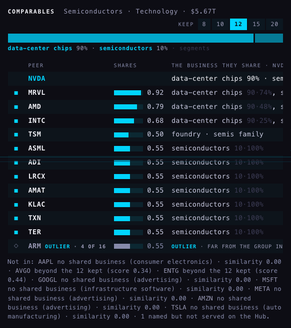
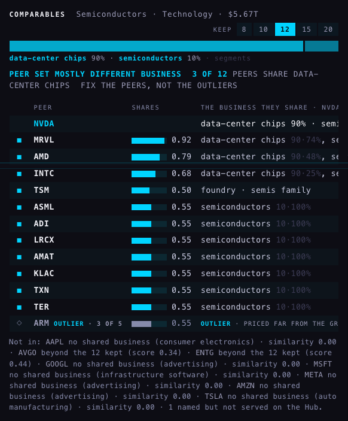
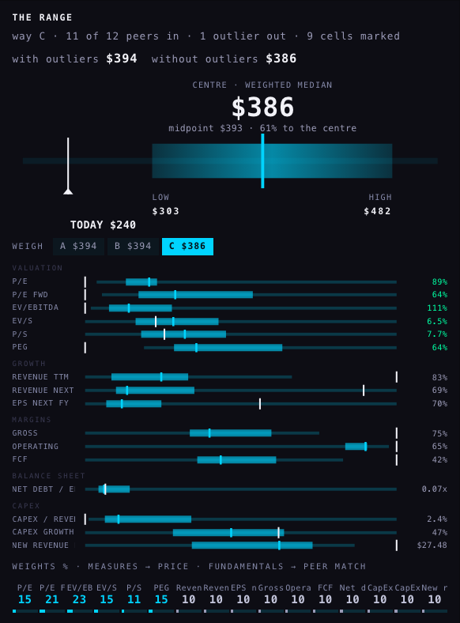
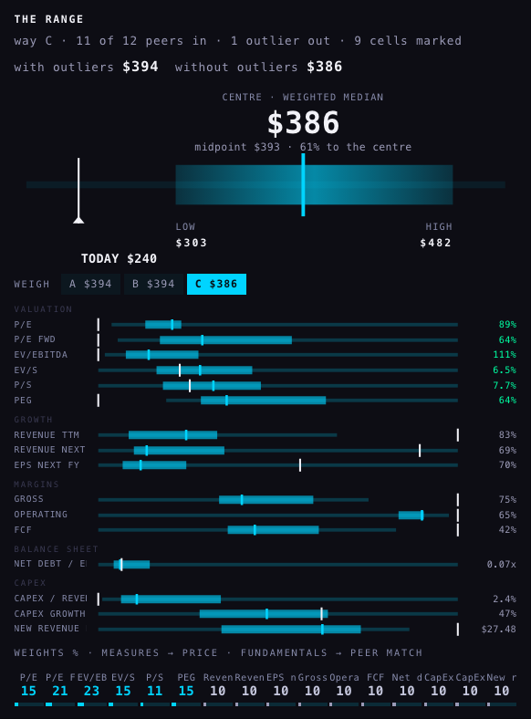
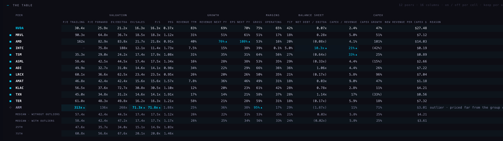
| NVDA · peers' median | C5b | C6 | C6b | NVDA's price at that median: C5b → C6 → C6b |
|---|---|---|---|---|
| P/E | 56.5× 9 peers | 57.5× 10 | 57.5× 10 | $447 → $454 → $454 |
| P/E forward | 42.4× 11 peers | 42.4× 11 | 42.4× 11 | $393 → $393 → $393 |
| EV/EBITDA | 47.1× 12 peers | 44.5× 11 | 44.5× 11 | $536 → $506 → $506 |
| EV/sales | 17.4× 11 peers | 17.4× 11 | 17.4× 11 | $256 → $256 → $256 |
| P/S | 17.5× 11 peers | 17.5× 11 | 17.5× 11 | $259 → $259 → $259 |
| PEG | 1.2× 12 peers | 1.1× 11 | 1.1× 11 | $412 → $395 → $395 |
| THE CENTRE (way C) | $391 | $386 | $386 | low $303 · high $482 |
| NVDA's peer | verdict | price marks (these vote) | other marks (information only) |
|---|---|---|---|
| AMD | in · 0 of 5 multiples | none | EPS next FY (6.5 spreads above), Revenue next FY (3.5 spreads above) |
| INTC | in · 0 of 5 multiples | none | Net debt / EBITDA (15.0 spreads above), CapEx / revenue (4.3 spreads above) |
| TSM | in · 0 of 5 multiples | none | CapEx / revenue (7.7 spreads above) |
| ARM | OUTLIER · 3 of 5 multiples | EV/S (5.4 spreads above), P/E (5.1 spreads above), P/S (4.3 spreads above) | Gross (4.9 spreads above) |
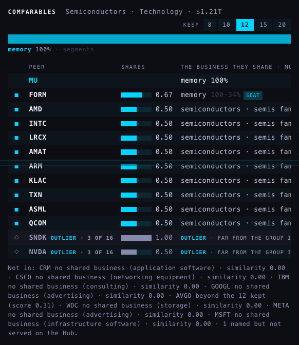
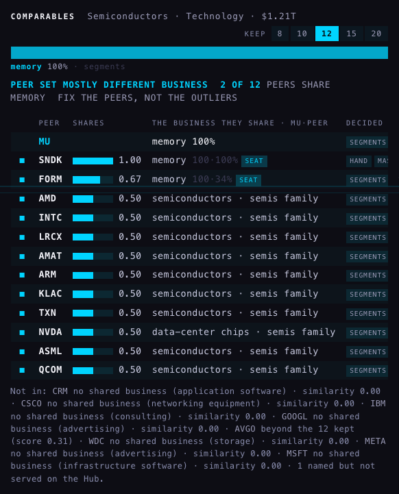
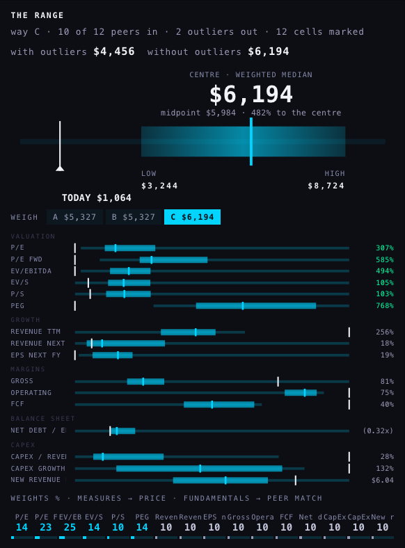
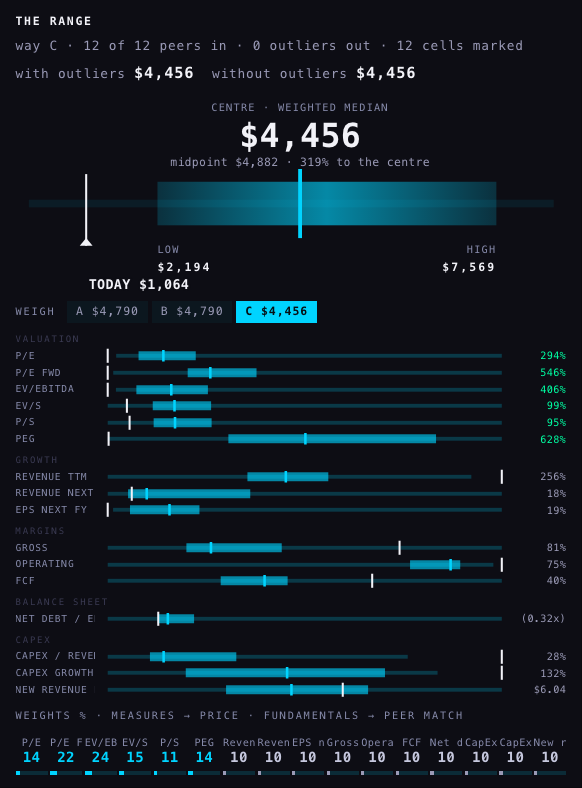
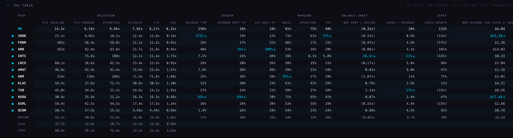
| MU · peers' median | C5b | C6 | C6b | MU's price at that median: C5b → C6 → C6b |
|---|---|---|---|---|
| P/E | 56.5× 11 peers | 58.4× 9 | 56.5× 11 | $4,193 → $4,334 → $4,193 |
| P/E forward | 42.4× 11 peers | 42.4× 10 | 40.0× 12 | $7,284 → $7,292 → $6,875 |
| EV/EBITDA | 51.6× 12 peers | 60.6× 10 | 51.6× 12 | $5,387 → $6,320 → $5,387 |
| EV/sales | 15.6× 11 peers | 16.5× 10 | 16.0× 12 | $2,068 → $2,184 → $2,114 |
| P/S | 15.6× 11 peers | 16.6× 10 | 15.9× 12 | $2,034 → $2,159 → $2,077 |
| PEG | 1.1× 11 peers | 1.2× 10 | 1.0× 12 | $8,323 → $9,235 → $7,746 |
| THE CENTRE (way C) | $4,497 | $6,194 | $4,456 | low $2,194 · high $7,569 |
| MU's peer | verdict | price marks (these vote) | other marks (information only) |
|---|---|---|---|
| SNDK | in · 0 of 5 multiples | none | New revenue per CapEx $ (18.8 spreads above), Revenue TTM (11.7 spreads above), FCF (4.3 spreads above) |
| AMD | in · 0 of 5 multiples | none | Revenue next FY (7.0 spreads above), EPS next FY (5.3 spreads above) |
| INTC | in · 0 of 5 multiples | none | Net debt / EBITDA (18.4 spreads above), CapEx / revenue (5.4 spreads above) |
| ARM | in · 0 of 5 multiples | none | Gross (4.6 spreads above) |
| TXN | in · 0 of 5 multiples | none | CapEx / revenue (4.0 spreads above) |
| NVDA | in · 0 of 5 multiples | none | New revenue per CapEx $ (7.7 spreads above), Revenue next FY (6.2 spreads above), Revenue TTM (4.9 spreads above) |
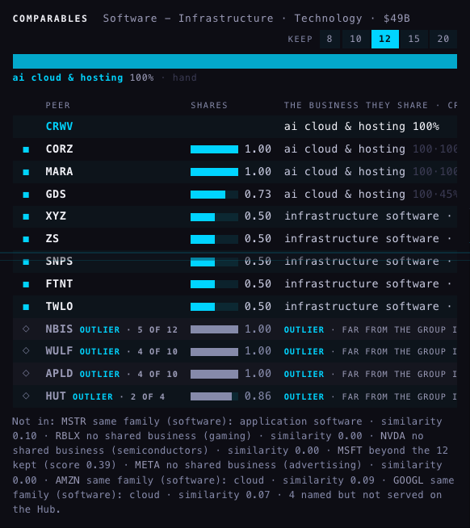
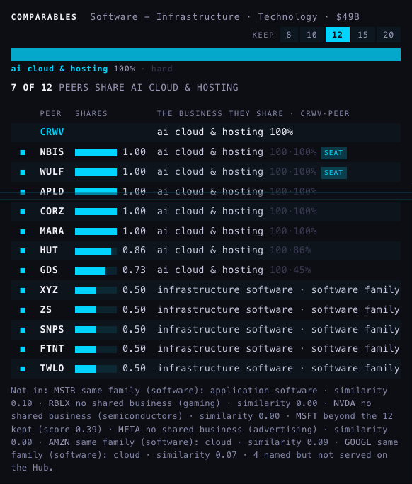
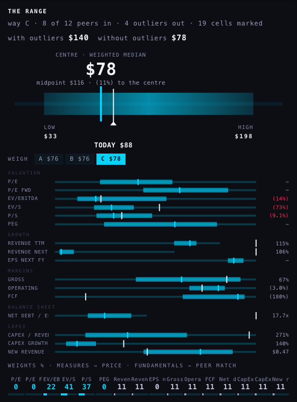
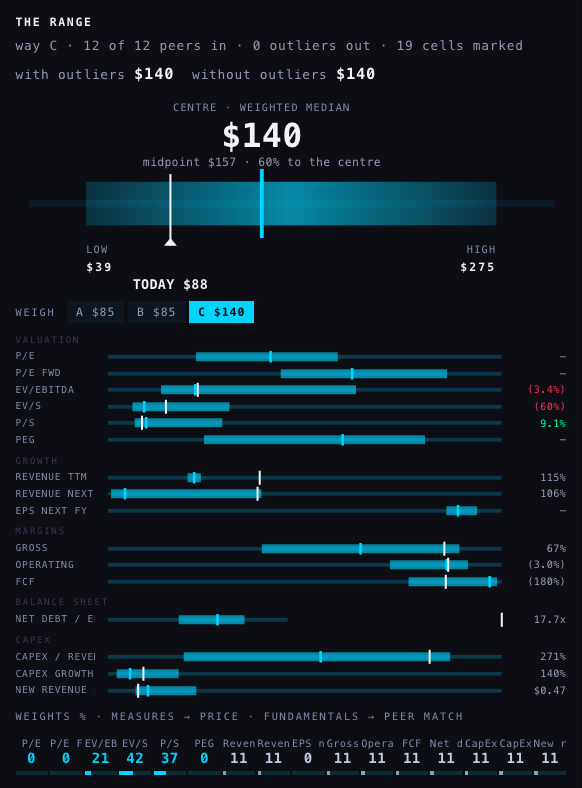
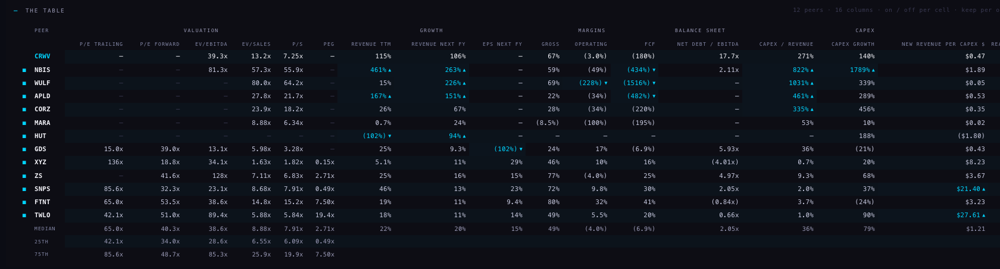
| CRWV · peers' median | C5b | C6 | C6b | CRWV's price at that median: C5b → C6 → C6b |
|---|---|---|---|---|
| P/E | 65.0× 5 peers | 65.0× 5 | 65.0× 5 | CRWV cannot be priced on this row |
| P/E forward | 40.3× 6 peers | 40.3× 6 | 40.3× 6 | CRWV cannot be priced on this row |
| EV/EBITDA | 38.6× 7 peers | 36.3× 6 | 38.6× 7 | $84.77 → $75.66 → $84.77 |
| EV/sales | 8.9× 11 peers | 7.9× 8 | 8.9× 11 | $35.43 → $23.46 → $35.43 |
| P/S | 7.9× 11 peers | 6.6× 8 | 7.9× 11 | $95.78 → $79.77 → $95.78 |
| PEG | 2.7× 5 peers | 2.7× 5 | 2.7× 5 | CRWV cannot be priced on this row |
| THE CENTRE (way C) | $140 | $77.97 | $140 | low $39.45 · high $275 |
| CRWV's peer | verdict | price marks (these vote) | other marks (information only) |
|---|---|---|---|
| NBIS | in · 0 of 3 multiples | none | Revenue TTM (24.8 spreads above), Revenue next FY (16.2 spreads above), CapEx / revenue (15.1 spreads above), CapEx growth (11.3 spreads above), FCF (6.0 spreads below) |
| WULF | in · 0 of 2 multiples | none | FCF (21.1 spreads below), CapEx / revenue (19.1 spreads above), Revenue next FY (13.8 spreads above), Operating (5.1 spreads below) |
| APLD | in · 0 of 2 multiples | none | Revenue next FY (8.7 spreads above), Revenue TTM (8.2 spreads above), CapEx / revenue (8.2 spreads above), FCF (6.6 spreads below) |
| CORZ | in · 0 of 2 multiples | none | CapEx / revenue (5.7 spreads above) |
| HUT | in · 0 of 0 multiples | none | Revenue TTM (7.0 spreads below), Revenue next FY (4.9 spreads above) |
| GDS | in · 0 of 4 multiples | none | EPS next FY (11.6 spreads below) |
| SNPS | in · 0 of 5 multiples | none | New revenue per CapEx $ (8.5 spreads above) |
| TWLO | in · 0 of 5 multiples | none | New revenue per CapEx $ (11.1 spreads above) |
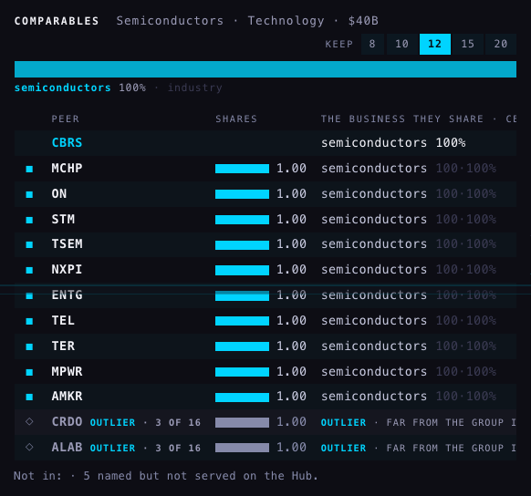
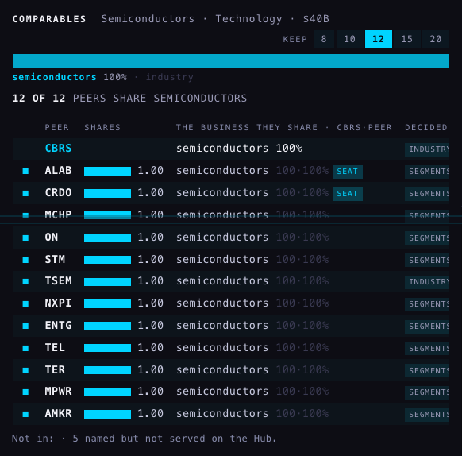
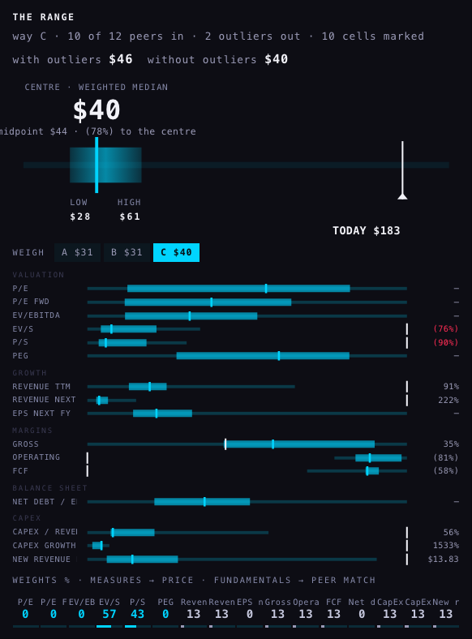
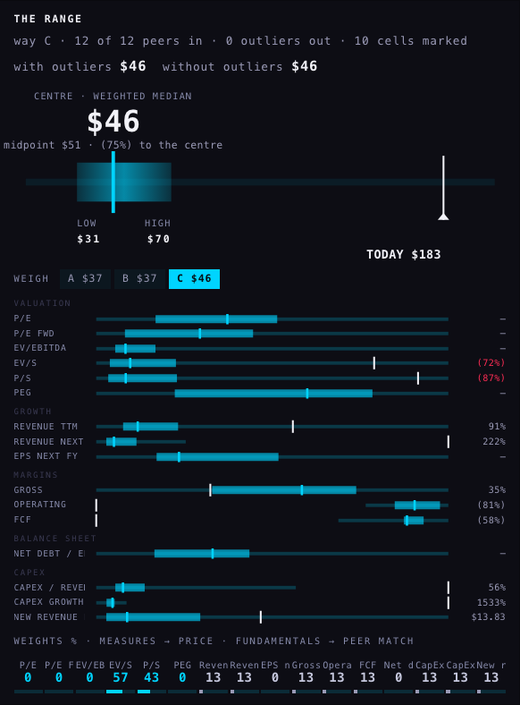
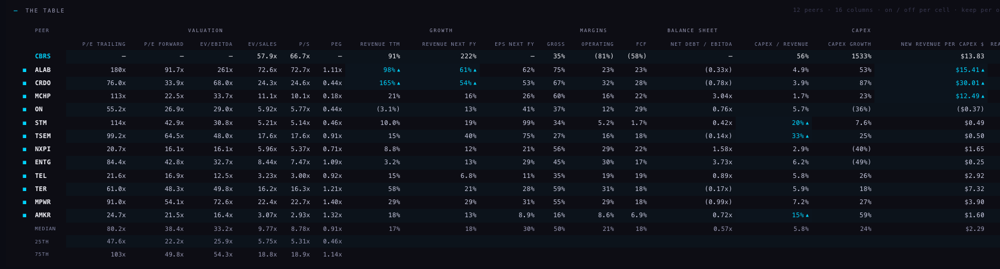
| CBRS · peers' median | C5b | C6 | C6b | CBRS's price at that median: C5b → C6 → C6b |
|---|---|---|---|---|
| P/E | 80.2× 12 peers | 72.7× 10 | 80.2× 12 | CBRS cannot be priced on this row |
| P/E forward | 38.4× 12 peers | 34.9× 10 | 38.4× 12 | CBRS cannot be priced on this row |
| EV/EBITDA | 33.2× 12 peers | 31.7× 10 | 33.2× 12 | CBRS cannot be priced on this row |
| EV/sales | 9.8× 12 peers | 7.2× 10 | 9.8× 12 | $50.66 → $43.63 → $50.66 |
| P/S | 8.8× 12 peers | 6.6× 10 | 8.8× 12 | $24.06 → $18.14 → $24.06 |
| PEG | 0.9× 11 peers | 0.9× 10 | 0.9× 12 | CBRS cannot be priced on this row |
| THE CENTRE (way C) | $46.20 | $40.17 | $46.20 | low $31.24 · high $70.14 |
| CBRS's peer | verdict | price marks (these vote) | other marks (information only) |
|---|---|---|---|
| ALAB | in · 0 of 5 multiples | none | Revenue TTM (5.5 spreads above), Revenue next FY (5.4 spreads above), New revenue per CapEx $ (4.6 spreads above) |
| CRDO | in · 0 of 5 multiples | none | Revenue TTM (10.1 spreads above), New revenue per CapEx $ (9.8 spreads above), Revenue next FY (4.5 spreads above) |
| MCHP | in · 0 of 5 multiples | none | New revenue per CapEx $ (3.6 spreads above) |
| STM | in · 0 of 5 multiples | none | CapEx / revenue (5.6 spreads above) |
| TSEM | in · 0 of 5 multiples | none | CapEx / revenue (10.7 spreads above) |
| AMKR | in · 0 of 5 multiples | none | CapEx / revenue (3.7 spreads above) |
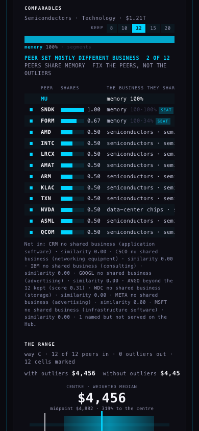
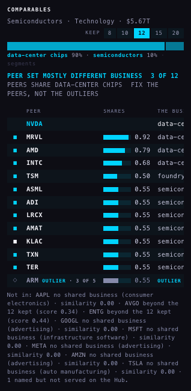
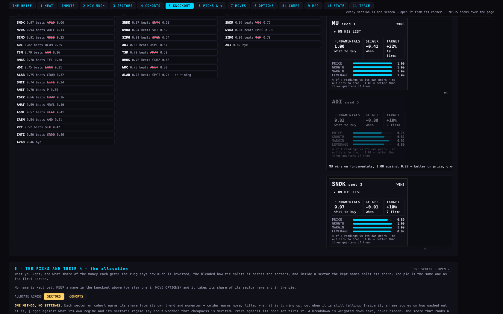
| name (top ten seeds after) | seed | fundamentals score | left out of its peers' medians |
|---|---|---|---|
| MU | 1 → 1 | 1.000 → 1.000 | 2 single cells → 0 peers |
| SNDK | 3 → 2 | 0.966 → 0.966 | 0 single cells → 0 peers |
| NVDA | 2 → 3 | 0.977 → 0.943 | 1 single cells → 0 peers |
| SIMO | 4 → 4 | 0.906 → 0.906 | 4 single cells → 0 peers |
| ADI | 5 → 5 | 0.817 → 0.817 | 1 single cells → 0 peers |
| TSM | 6 → 6 | 0.789 → 0.789 | 4 single cells → 0 peers |
| RMBS | 9 → 7 | 0.747 → 0.779 | 4 single cells → 0 peers |
| WDC | 7 → 8 | 0.750 → 0.750 | 1 single cells → 0 peers |
| ALAB | 8 → 9 | 0.750 → 0.750 | 0 single cells → 0 peers |
| SMCI | 10 → 10 | 0.742 → 0.742 | 0 single cells → 0 peers |
| the final | before: MU beat NVDA (1.00 v 0.98) | after: MU beat SNDK (1.00 v 0.97) |
| names with an outlier peer | before: 21 of 35 had single cells dropped | after: NBIS: CHTR |
The rule, in two sentences. An outlier is a peer whose price is strange next to the group: in each valuation multiple (log scale) a peer more than 3.5 typical spreads from the peers' median is marked, trailing and forward P/E count as one vote, and a peer marked on 3 or more votes — or on at least half the votes it has, and at least two — is greyed, left out of every median and of the implied price, never deleted, one click keeps it. Growth, margin, capex and leverage cells are still marked when far out, as information only, and never count.
The votes. Five on the Hub's comps tab: P/E (trailing or forward), EV/EBITDA, EV/sales, P/S, PEG — the multiples C5 shows; it has no forward EV/sales and no P/FCF. Three in the allocation tool, which carries fewer columns: P/E (trailing or forward), P/S, P/B.
What changed on the four names. C6 removed nine peers; eight of them were fast growers with ordinary multiples and are back in (MU: SNDK, NVDA · CRWV: NBIS, WULF, APLD, HUT · CBRS: CRDO, ALAB). Their growth and capex cells are still marked, fainter. ARM stays out of NVDA's set, now on three price votes (P/E, EV/sales, P/S); its gross-margin mark no longer counts. MU, CRWV and CBRS return to the centre they had with every peer in.
Same business? A peer shares the company's business when at least 15% of its revenue sits in a line it shares exactly with the company (C5's own membership bar), not merely the same family. When fewer than half the peers do, the set is named “peer set mostly different business — fix the peers, not the outliers”, and the outlier rule does not cut the peers that do share it. Tonight: MU 2 of 12 (memory) and NVDA 3 of 12 (data-center chips) are named; CBRS 12 of 12 is not; CRWV 7 of 12 share “ai cloud & hosting” and is not named — on C5's lines its set is five infrastructure-software names and seven AI hosts (five of them bitcoin miners turned hosts), so it is not “mostly software”. FMP's own industry label was not used for this test: it files CoreWeave under “Software - Infrastructure”, which would call the software names the right ones.
The allocation tool. The knockout's four readings, and the COMPARABLES table, measured each name against its peers after dropping single cells (C5's old rule, 3 spreads, ratios only). They now drop whole peers on the same price-only rule. In AI_HARDWARE tonight, 21 of 35 names had single cells dropped from their peers before; after, one peer is left out in one name's set (NBIS: CHTR). Seeds move a little; the final is MU over SNDK where it was MU over NVDA. Two other medians in that tool still use C5's single-cell rule and were not touched: the sector-wide CHEAP / EXPENSIVE read and the implied-price table.
Where each number comes from. The four sets are C6's fixtures (C5's business-first sets, prices from the chart API on 5 Oct after the close, figures from the Hub's tables with C5b's one-currency rule). C5b and C6 are recomputed by the same code on the same figures; C6's first rule is kept reproducible in the code. The knockout rows are the live allocation page run headless, main against the branch, minutes apart. Pictures: headless, 1680 and 390 wide, the Hub served from the branch under its own hostname; every write the page attempted was answered locally (2, both from the keep click and its undo on NVDA at 390).
What could be wrong. (1) EV/sales and P/S are still two votes although they say nearly the same thing; counting them once leaves the four names unchanged (ARM is then out on 2 of 4). (2) A peer that loses money has few multiples: with only two, both must be far out. (3) NVDA's set is named “mostly different business” because nine of its twelve peers are equipment, analog, foundry and IP names; that is what the test measures, and it may read as noise on a company with few true peers. (4) The same-business protection did not act on any of the four sets tonight; it is covered by a made-up case in the tests only. (5) The group is measured once, and the company itself is not tested.
Not done. Nothing is deployed; index.html is untouched; no table was written. No peer set was changed — MU's and NVDA's are named, not fixed. C6's own report page and its pictures are left as they were.
Tests. Hub: tests/comps-c6b.test.mjs, 8 tests (a fast grower with normal multiples is not an outlier; a 300× P/E peer is; trailing and forward P/E are one vote; growth marks never tip a verdict; the four names; the business test; the tab). tests/comps-c6.test.mjs, 11 tests, now run C6's first rule by name. Allocation: tests/pa5b.test.mjs, 5 tests.